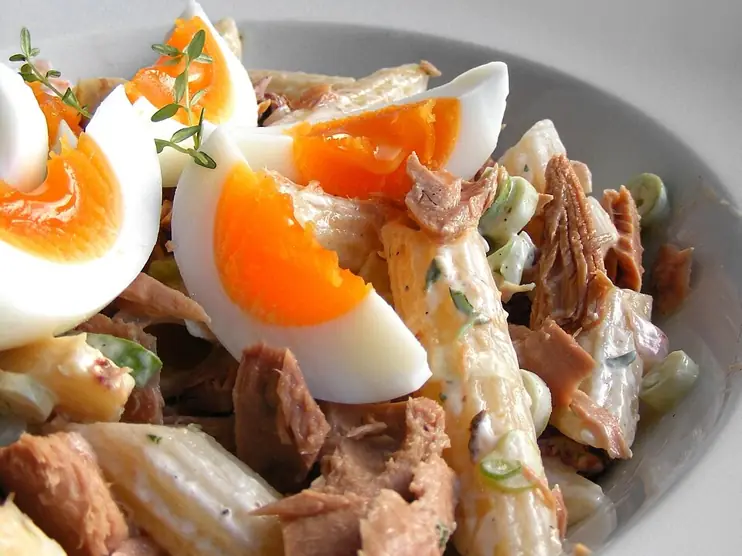

Фото: FotoosVanRobin from Netherlands, CC BY-SA 2.0

Паста с тунцом
Макароны с консервированным тунцом в томатном соусе с чесноком
25 мин3 порц.518 ккал на порциюБ 26 · Ж 12 · У 76Итальянская кухня
Продукты на 3 порц.
- Макароны300 г
- Тунец консервированный1 банка
- Томаты в собственном соку1 банка
- Чеснок2 зуб.
- Оливковое масло2 ст. л.
- Оливки / маслины по желанию50 г
- Петрушка по желанию10 г
- Острый перец молотый по желанию1 щеп.
- Соль2 ч. л.
- Вода3000 мл
Как готовить
- Поставьте вариться пасту в подсоленной воде по инструкции на упаковке.
- Разогрейте масло на сковороде на среднем огне, обжарьте нарезанный пластинками чеснок 1 минуту до лёгкого золотистого цвета.
- Добавьте томаты, размяв их, и тушите 10 минут до загустения.
- Положите тунец, разобранный вилкой, и оливки кольцами, прогрейте 2 минуты.
- Откиньте пасту, оставив 100 мл воды. Смешайте с соусом, подливая воду, пока соус не обволочёт пасту. Посыпьте петрушкой.
Совет. Тунец в собственном соку легче, в масле сочнее. Сыр к рыбной пасте итальянцы не добавляют.